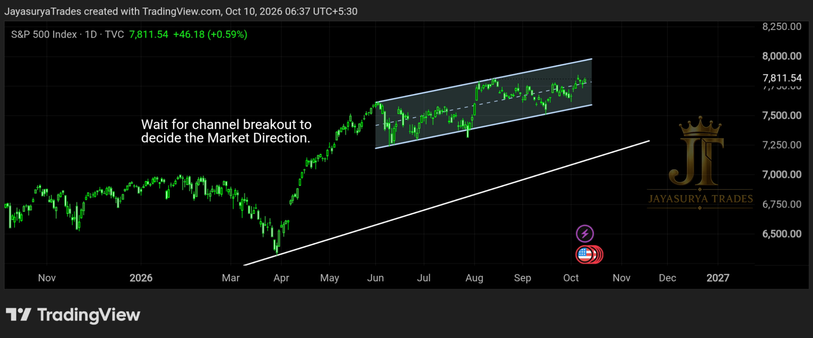

For this Saturday Market Focus, I am looking at the S&P 500. The market is currently forming a parallel channel. At this stage, I am waiting for price to show which direction it wants to take rather than predicting a breakout before it happens.
From the broader perspective of this analysis, the market has a bullish bias. However, that view alone is not enough to make a trading decision. The more useful information will come from the market's response when price reaches the key levels marked on the chart.
Current structure: Parallel channel
Primary bias: Bullish, while awaiting confirmation
Key decision: Breakout above the channel or breakdown below it
Important nearby support: Ascending trendline marked below the channel

Current Market Structure
The S&P 500 is forming a parallel channel, so I want to see a clear response at either boundary before deciding on the next move. The broader view remains bullish, but the immediate direction still needs to be confirmed by price action.
If the market breaks above the channel and provides a bullish candle close, that could signal continuation of the upward move. If price breaks below the channel and closes beneath it, a short-term downside move could develop. These are scenarios to monitor, not predictions of what must happen.
Scenario 1 — Breakout Above the Channel
If the S&P 500 breaks above the top of the parallel channel and the breakout is supported by a bullish close, I will look for the possibility of bullish continuation. In that case, potential bullish setups may be considered only after the market confirms the breakout.
The key is the market's response at the channel top. I do not want to treat price merely approaching or briefly moving above the boundary as enough confirmation. I will wait to see how the candle closes and how price behaves around that level.
Scenario 2 — Breakdown Below the Channel
If the market breaks below the bottom of the parallel channel and closes below it, a short-term downside move could follow. This may create a potential short-term selling scenario, but the ascending trendline marked immediately below the channel must also be kept in mind.
Because that ascending trendline could act as support, a breakdown from the channel does not automatically mean that price will continue falling for an extended move. The distance to the trendline and the market's reaction there are important parts of this scenario.
The Ascending Trendline Below the Channel
The ascending trendline I have marked below the parallel channel is an important level to watch. If price breaks below the channel and moves down towards this trendline, I will wait for the market to reach the area and then observe its behaviour.
If the trendline holds and price responds with an upward move, the market could potentially begin another bullish swing. If price does not hold there, the analysis will need to be reassessed based on the new price action. A reversal is possible, but it should not be assumed in advance.
Fundamental View Versus Market Confirmation
Looking at the broader fundamental perspective, my expectation is that the market may continue to favour bullish movement overall. That could be consistent with an upward breakout from the parallel channel. Alternatively, if price first breaks downwards, it could reach the ascending trendline and potentially turn upwards from that support area.
However, this is only a broader expectation, not a reliable entry signal on its own. The price response at the marked levels is what matters for the technical decision. I will not treat the fundamental view as confirmation that the market must break upwards or reverse at the trendline.
Below the channel: watch for a confirmed bearish breakdown and possible short-term selling.
At the ascending trendline: wait for the market's reaction before considering a possible bullish turn.
No decision before price reaches the key level and provides confirmation.
What I Will Watch Next
At the Channel Top
I will watch whether price breaks above the channel and produces a bullish close. If that breakout is confirmed, the bullish continuation scenario becomes more relevant.
At the Channel Bottom
I will watch whether price closes below the lower boundary. If it does, a short-term downside move and potential sell setups may be considered, while keeping the ascending trendline below the channel in view.
At the Ascending Trendline
If price reaches the ascending trendline, I will wait to see how the market behaves there. A clear upward response could support another bullish swing, but the reaction must be observed before changing the market view.
Key Takeaways
- The S&P 500 is forming a parallel channel.
- The broader bias in this analysis remains bullish, but the next direction is not yet confirmed.
- A confirmed break and bullish close above the channel could support a bullish continuation scenario.
- A close below the channel could lead to a short-term downside move and potential selling setups.
- The ascending trendline marked below the channel could act as support if price moves down to it.
- If price reaches the trendline, wait for the market's response before considering a possible bullish reversal.
- The fundamental view is not enough on its own; decisions should be based on price behaviour at the marked key levels.
- The next weekly review will assess what price actually does at these levels.
For now, I am not choosing a direction before the market confirms it. I will let price reach the channel boundaries and the ascending trendline, then assess the response at each level. The next update will be based on that behaviour rather than guesswork.
Wait for the key level.
Observe the market's response.
Confirm before deciding the direction.
One day. One market. One focused analysis.
Levels. Structure. Scenarios. Confirmation.
No hype. Just how the market behaves.
Watch. Wait. Confirm.
Risk Disclaimer
This analysis is provided for educational and informational purposes only and
should not be considered financial advice or a recommendation to buy or sell
any financial instrument.
Trading involves substantial risk. Always conduct your own research and follow
your own trading plan and risk-management rules.